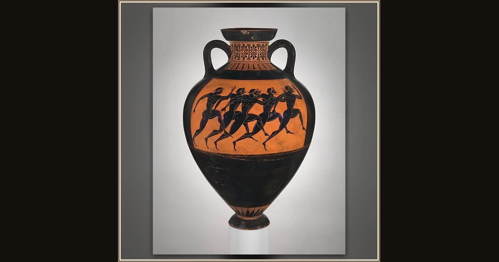

Terracotta Panathenaic prize amphora
Attributed to the Euphiletos Painter · ca. 530 BCE · The Metropolitan Museum of Art · New York, USA
This tall jar was itself a prize: filled with sacred olive oil, it was handed to the champion of the Athenian games, and runners sprint around its belly. It is just the kind of contest the Phaeacians spring on Odysseus, daring their guest to compete. Explore i